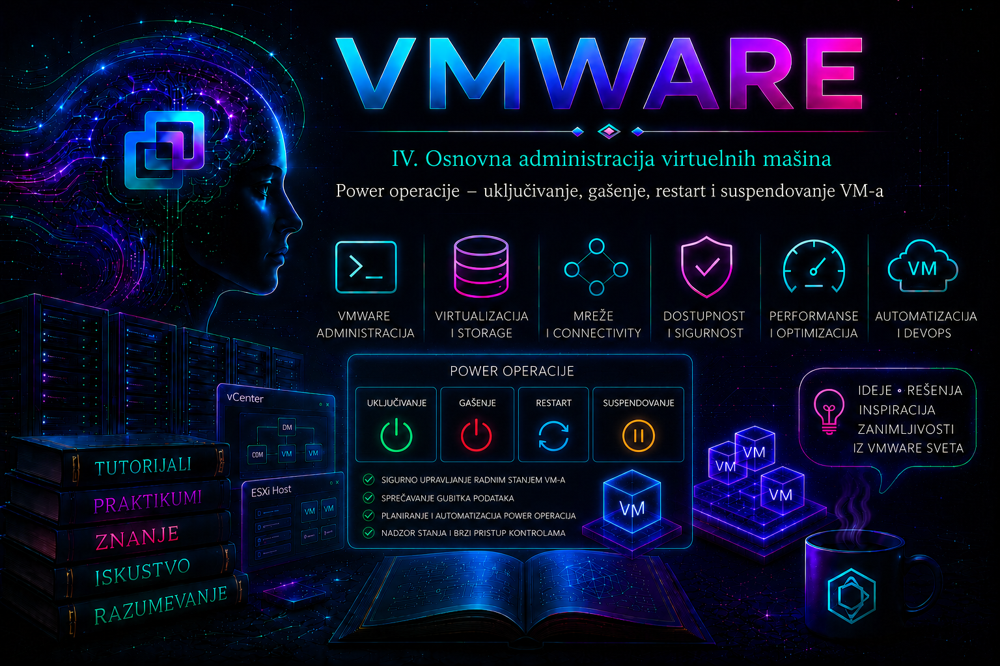

VMware

Power operacije su među najčešćim, ali i najpotcenjenijim administratorskim radnjama nad virtuelnim mašinama. Uključivanje, uredno gašenje, prinudno isključivanje, restartovanje, resetovanje, suspendovanje i nastavak rada menjaju dostupnost workload-a, a pogrešan izbor može ugroziti otvorene transakcije, integritet fajl sistema, klasterski kvorum i vreme oporavka servisa. Zbog toga iskusan administrator ne pita samo „koje dugme treba pritisnuti”, već najpre utvrđuje poslovni uticaj, stanje guest operativnog sistema, zavisnosti aplikacije i najmanje invazivnu operaciju koja rešava stvarni problem.
Prethodne lekcije uspostavile su model virtuelne mašine, njen virtuelni hardver, ulogu VMware Tools-a i standardizovano kreiranje workload-a. Ova lekcija ta znanja pretvara u svakodnevnu operativnu disciplinu. Ona je ujedno uvod u prvi troubleshooting: pre svake promene stanja prikupljaju se dokazi, a posle nje potvrđuje se ne samo da je VM promenio power state, već i da su guest OS, mreža, diskovi i aplikativni servisi zaista zdravi.
Dva kontrolna nivoa: virtuelni hardver i guest operativni sistem
Virtuelna mašina ima stanje koje kontroliše ESXi i posebno operativno stanje guest sistema. Hipervizorske operacije deluju na virtuelni hardver: Power On, Power Off, Reset, Suspend i Resume. Guest operacije, kao što su Shut Down Guest OS i Restart Guest OS, zahtevaju da gost primi i obradi zahtev, najčešće posredstvom ispravnog VMware Tools-a ili open-vm-tools-a. Zbog toga VM može biti poweredOn, dok je guest sistem zamrznut, tek se podiže ili nema funkcionalne mrežne i aplikativne servise.
| Operacija | Nivo delovanja | Uredan završetak guest rada | Tipična namena i rizik |
|---|---|---|---|
| Power On | Hipervizor | Nije primenljivo | Pokretanje VM-a; zahteva raspoložive resurse, pristupačne datoteke i kompatibilan host. |
| Shut Down Guest OS | Guest OS preko Tools-a | Da | Preporučeno plansko gašenje; aplikacija mora imati dovoljno vremena da zatvori rad. |
| Power Off | Hipervizor | Ne | Ekvivalent prekidu napajanja; rizik gubitka podataka i oštećenja fajl sistema. |
| Restart Guest OS | Guest OS preko Tools-a | Da | Preporučeni planski reboot posle zakrpa ili promene konfiguracije. |
| Reset | Hipervizor | Ne | Ekvivalent hardverskom resetu; koristi se samo kada uredan reboot nije moguć. |
| Suspend | Hipervizor | Ne gasi guest | Čuva izvršno stanje na datastore-u; zahteva prostor i uvodi vremenski prekid. |
| Resume | Hipervizor | Nastavlja sačuvano stanje | Brži nastavak bez boot-a; moguć problem CPU kompatibilnosti ili zastarelog vremena/sesija. |
Power On – uključivanje virtuelne mašine
Power On pokreće virtuelni hardver, izvršava virtuelni BIOS ili UEFI i predaje kontrolu boot uređaju. ESXi formira VMX proces, obezbeđuje memorijski overhead, primenjuje CPU i memorijske rezervacije i kreira ili otvara potrebne datoteke, uključujući virtuelne diskove i swap datoteku kada je potrebna. Povezuje se konfigurisani virtuelni mrežni adapter, ali to samo po sebi ne dokazuje da guest ima ispravnu IP konfiguraciju ili da je aplikacija dostupna.
Pre pokretanja administrator proverava host i klaster, slobodan datastore kapacitet, dostupnost svih VMDK i ISO putanja, otvorene alarme, tekuće zadatke, resource pool ograničenja i HA admission control. Kod velikog broja VM-ova koristi se kontrolisano pokretanje u talasima, jer istovremeni boot izaziva CPU, memorijski, storage I/O i autentikacioni „boot storm”. Posebno se poštuje redosled zavisnosti: infrastruktura identiteta, DNS, baze i middleware obično moraju biti spremni pre aplikativnih slojeva.
Guest Shutdown – pravilno gašenje operativnog sistema
Shut Down Guest OS šalje guest sistemu zahtev za uredno gašenje. Operativni sistem zatvara servise i procese, prazni keševe, završava filesystem i aplikativne transakcije i tek zatim prestaje da radi. Operacija zavisi od aktivnog VMware Tools servisa, podrške gosta i njegovih lokalnih politika; API zahtev se vraća bez čekanja da se kompletno gašenje završi, pa administrator mora naknadno proveriti stanje.
Uredno gašenje ne zamenjuje aplikativnu proceduru. Baza podataka, klaster ili višeslojna aplikacija mogu zahtevati zaustavljanje saobraćaja, uklanjanje čvora iz load balancer-a, proveru replikacije ili ručno zaustavljanje servisa. Ako se VM ne ugasi u očekivanom roku, najpre se proveravaju konzola, status Tools-a, događaji i procesi unutar gosta; ne prelazi se automatski na Power Off samo zato što je klijentski zadatak istekao.
Power Off – trenutno isključivanje
Power Off trenutno zaustavlja izvršavanje virtuelne mašine i odgovara prekidu napajanja fizičkog servera. Ne omogućava guest sistemu da zatvori procese, isprazni keševe ili dovrši transakcije. Koristi se tek kada je guest potpuno neodzivan, uredan shutdown nije uspeo, a poslovna posledica daljeg čekanja veća je od rizika prinudnog prekida. Posle operacije mogu uslediti journal recovery, fsck, chkdsk, oporavak baze ili aplikativna nekonzistentnost.
Pre prinudnog gašenja beleže se vreme, simptom, vlasnik odobrenja, aktivni zadaci i dostupni dokazi. Ako je moguće, uzima se screenshot konzole i pregledaju događaji i logovi. Power Off nije metoda za rešavanje zaključanog VMDK-a bez utvrđenog vlasnika zaključavanja niti zamena za bezbednu proceduru gašenja produkcionog servisa.
Restart Guest OS i Reset
Restart Guest OS predstavlja uredan reboot: guest zatvara servise i ponovo podiže kernel bez prekida virtuelnog napajanja. Koristi se posle zakrpa, ažuriranja kernela ili drajvera i promena koje zahtevaju reboot. Kao i shutdown, zavisi od VMware Tools-a i ne dokazuje sam da se sistem uspešno vratio; proveravaju se Tools status, mreža, sistemski servisi i aplikativni health check.
Reset odmah ponovo inicijalizuje virtuelni hardver, bez urednog zatvaranja gosta. To je ekvivalent fizičkom tasteru Reset i nosi sličan rizik kao Power Off praćen Power On operacijom. Reset se koristi samo kada je VM neodzivan, a dokazano nije moguće izvršiti uredan reboot. Izraz power cycle obično opisuje prinudni Power Off pa Power On; nije potreban za uobičajeno plansko restartovanje i ne treba ga predstavljati kao bezazlenu operaciju.
Suspend i Resume – čuvanje i nastavak izvršnog stanja
Suspend pauzira VM i upisuje njeno izvršno, uključujući memorijsko stanje, u datoteke na datastore-u. Resume učitava to stanje i nastavlja rad bez punog boot procesa. Suspend oslobađa aktivne compute resurse, ali ne predstavlja backup, snapshot niti uredno gašenje aplikacije. Potreban je dodatni datastore prostor približno povezan sa konfigurisanom memorijom i sačuvanim stanjem, a operacija može kratkotrajno intenzivno opteretiti storage.
Ova mogućnost je korisna u laboratorijama, razvojnim okruženjima i kratkim kontrolisanim pauzama. U produkciji se izbegava za baze, kontrolere domena, distribuirane sisteme, quorum i HA članove, jer spoljni svet nastavlja da meri vreme dok je VM zamrznut: TCP sesije ističu, lease i tokeni zastarevaju, klaster može proglasiti čvor mrtvim, a po nastavku su mogući skok vremena i ponovna autentikacija. Resume može biti onemogućen i kada odredišni host nema CPU karakteristike potrebne sačuvanom stanju; tada je bezbedna opcija povratak na kompatibilan host ili, ako stanje više nije potrebno i rizik je prihvaćen, odbacivanje suspendovanog stanja i hladan boot.
Dozvole, audit i kontrola promena
Power operacije zahtevaju odgovarajuće privilegije iz grupe Virtual machine > Interaction, kao što su Power On, Power Off, Reset i Suspend. Guest shutdown i reboot takođe imaju odgovarajuće interakcione privilegije, ali uspeh zavisi od gosta. U produkciji se primenjuju najmanje privilegije, imenovani nalozi, odobren change ili incident i zabrana deljenih administratorskih naloga. vCenter Tasks and Events beleži ko je inicirao operaciju, nad kojim objektom i kada; to je važan audit trag koji treba korelisati sa monitoringom i logovima gosta.
Power operacije u vSphere Client-u
U vSphere Client-u bira se tačno određeni VM, proveravaju se Summary, Alarms, Recent Tasks i VMware Tools status, zatim Actions → Power. Nazivi i raspored mogu se neznatno razlikovati između verzija klijenta, ali se operacije semantički dele na hipervizorske i guest operacije. Pre potvrde rizične radnje ponovo se proveravaju naziv, folder, cluster, host i poslovni vlasnik VM-a.
VM → Actions → Power
Power On
Power Off
Shut Down Guest OS
Restart Guest OS
Reset
Suspend
ResumePowerCLI administracija i bezbedna automatizacija
Aktuelna dokumentacija koristi naziv VCF PowerCLI, dok su moduli i brojni cmdlet-i zadržali poznatu VMware.VimAutomation nomenklaturu. Sledeće komande izvršavaju se sa administratorske radne stanice sa instaliranim PowerCLI modulima, nad vCenter Server-om i nalogom sa najmanjim potrebnim privilegijama. Najpre se koristi read-only inventarski pregled.
Connect-VIServer -Server 'vcsa.lab.local'
$vm = Get-VM -Name 'Ubuntu-Server'
$vm | Select-Object Name, PowerState, VMHost,
@{N='ToolsStatus';E={$_.ExtensionData.Guest.ToolsStatus}},
@{N='ToolsRunning';E={$_.ExtensionData.Guest.ToolsRunningStatus}}
Start-VM menja stanje i uključuje VM. Stop-VMGuest traži uredno gašenje gosta, dok Stop-VM radi hard power-off; ta dva cmdlet-a nisu sinonimi. Isto tako, Restart-VMGuest traži uredan guest reboot, dok Restart-VM resetuje virtuelnu mašinu. Parametar -Confirm:$false uklanja zaštitni prompt i koristi se samo u unapred proveravanoj automatizaciji.
# State-changing: uključivanje tačno identifikovanog VM-a
Start-VM -VM $vm -Confirm:$true
# State-changing: preporučeno uredno gašenje preko VMware Tools-a
Stop-VMGuest -VM $vm -Confirm:$true
# State-changing: uredan reboot gosta
Restart-VMGuest -VM $vm -Confirm:$true
# State-changing: suspendovanje i kasniji nastavak
Suspend-VM -VM $vm -Confirm:$true
Start-VM -VM $vm -Confirm:$true
Masovne operacije nikada se ne pokreću nekontrolisanim izrazom Get-VM | Start-VM. Obim se prvo materijalizuje, pregleda i prebroji, a zatim se obrada izvodi u kontrolisanim talasima, uz redosled zavisnosti i validaciju. Sledeći laboratorijski primer ograničen je na folder i eksplicitnu listu odobrenih imena.
$approvedNames = @('lab-web-01', 'lab-web-02')
$targets = Get-Folder -Name 'LAB-PowerOps' |
Get-VM |
Where-Object { $_.Name -in $approvedNames -and $_.PowerState -eq 'PoweredOff' }
# Pre-change kontrola: prikaz mora biti ručno pregledan
$targets | Select-Object Name, PowerState, VMHost
# Pokrenuti tek posle potvrde obima
$targets | ForEach-Object {
Start-VM -VM $_ -Confirm:$true
}ESXi Shell: lokalna dijagnostika i poslednja linija intervencije
ESXi Shell i SSH ne treba trajno držati uključene bez potrebe. Koriste se u kontrolisanom prozoru, uz audit i isključivanje servisa posle rada. vim-cmd je lokalni ESXi alat koristan kada vCenter nije dostupan; VMID je lokalni identifikator na hostu i mora se ponovo utvrditi. Sledeće komande se izvršavaju kao privilegovani ESXi nalog. Prve dve su read-only, ostale menjaju stanje.
vim-cmd vmsvc/getallvms
vim-cmd vmsvc/power.getstate 3
# State-changing; koristiti tek nakon potvrde VMID-a
vim-cmd vmsvc/power.on 3
vim-cmd vmsvc/power.shutdown 3
vim-cmd vmsvc/power.reboot 3
vim-cmd vmsvc/power.suspend 3
# Rizično: hard power-off
vim-cmd vmsvc/power.off 3Retrieved runtime info
Powered on
Ako standardna operacija nad neodzivnim VM-om ne uspe, ne ubijaju se nasumično procesi. Najpre se identifikuje VM world pomoću esxcli vm process list, prikupe dokazi i eskalira redosled gašenja od najmanje invazivnog ka najinvazivnijem. esxcli vm process kill je poslednja mera za laboratoriju ili odobren incident; nepravilna meta može izazvati gubitak podataka.
# Read-only: pronaći World ID tačno određenog neodzivnog VM-a
esxcli vm process list
# Rizično i state-changing; primer samo za kontrolisani incident
esxcli vm process kill --type=soft --world-id=123456
# Ako soft ne uspe, support ili incident procedura može odobriti hard, pa force.Dokazi: događaji, alarmi, metrike i logovi
Prvi izvor je vSphere Client: Tasks and Events, alarmi VM-a, hosta, klastera i datastore-a, kao i poruka neuspelog zadatka. Za power-on problem najvažniji je vmware.log u direktorijumu VM-a; stvara ga VMX proces i sadrži konkretne poruke o otvaranju diskova, CPU kompatibilnosti, uređajima i neuspehu pokretanja. Na ESXi hostu /var/run/log/hostd.log beleži lokalne management operacije, a /var/run/log/vmkernel.log kernel, storage i uređajne događaje. Na vCenter Server Appliance-u /var/log/vmware/vpxd/vpxd.log pomaže kada je problem u vCenter zadatku ili komunikaciji sa hostom.
# Read-only; ESXi Shell, vremenski ograničena pretraga relevantnih poruka
tail -n 200 /var/run/log/hostd.log
tail -n 200 /var/run/log/vmkernel.log
# U direktorijumu konkretnog VM-a; putanju utvrditi iz inventara
tail -n 200 vmware.logLog se čita u odgovarajućoj vremenskoj zoni i periodu oko incidenta, a nalaz se koreliše sa task ID-jem, korisnikom, poslednjom promenom i alarmima. Ne zaključuje se samo na osnovu jedne generičke linije. Za suspend i resume proveravaju se datastore kapacitet i latencija; za boot storm CPU ready, host memory pressure i storage latency; za aplikativni oporavak koriste se guest i aplikativni logovi.
Sistematičan troubleshooting kada VM ne može da se pokrene
- Simptom, obim i posledica: zabeležiti tačnu poruku, vreme, procenat na kojem task stoji, da li je pogođen jedan VM ili više VM-ova, jedan host ili datastore, i koji servis nije dostupan.
- Najmanje invazivne provere: pregledati Recent Tasks, Events, Alarms i pending pitanje koje ponekad zadrži power-on zadatak; proveriti da li je drugi task još aktivan.
- Resursi i politika: proveriti memory reservation, resource pool limit, host kapacitet i HA admission control. Slobodan RAM prikazan u jednom pogledu nije jedini kriterijum.
- Storage i datoteke: potvrditi dostupnost datastore-a, slobodan prostor, postojanje VMX/VMDK/swap putanja i vlasnika eventualnog lock-a. Zaključavanje je zaštitni mehanizam; ne uklanja se naslepo.
- Kompatibilnost i konfiguracija: proveriti CPU/EVC karakteristike, naročito posle resume-a ili promene hosta, virtuelni hardver, povezane uređaje i nedostupne ISO putanje.
- Logovi i hipoteza: povezati konkretnu grešku iz
vmware.log,hostd.logilivmkernel.logsa prethodnim dokazima; tek tada menjati stanje. - Korekcija i validacija: primeniti najmanju promenu koja rešava potvrđen uzrok, pokrenuti jedan VM i potvrditi guest, mrežni i aplikativni health pre šire akcije.
| Simptom | Verovatan neposredni uzrok | Bezbedna sledeća provera | Trajna mera |
|---|---|---|---|
| Insufficient resources | Reservation, limit ili HA admission control | Host/cluster resursi, resource pool i događaj zadatka | Ispraviti sizing, rezervacije ili kapacitet; ne gasiti nasumične VM-ove. |
| Failed to lock the file | Datoteku drži drugi host/proces ili backup hot-add tok | Utvrditi vlasnika lock-a i aktivne backup/migration zadatke | Otkloniti osnovni uzrok kroz podržanu KB proceduru. |
| Task stoji oko 95% | VM čeka administratorski odgovor | VM Summary i pending questions | Odgovoriti tek posle razumevanja posledice i ispraviti uzrok pitanja. |
| Resume nije moguć | Nekompatibilne CPU karakteristike ili oštećeno/nedostupno stanje | Vratiti VM na izvorni/kompatibilni host i pregledati log | EVC/kompatibilan placement; odbaciti stanje samo uz odobren rizik. |
| VM je powered on, servis nije dostupan | Guest boot, mreža ili aplikacija nisu zdravi | Konzola, Tools, guest IP, port i aplikativni health check | Ispraviti guest/aplikativni uzrok; power state nije health signal. |
Praktikum – bezbedan životni ciklus i incident sa neodzivnim VM-om
Cilj i kontekst: administrator treba da izvrši planski reboot laboratorijskog servera, potvrdi potpuni oporavak, zatim simulira neuspešan guest zahtev bez prinudnog prekida produkcionih podataka. Topologiju čine vCenter, jedan ESXi host ili mali klaster, datastore i VM lab-power-01 sa VMware Tools-om i jednostavnim testnim servisom. Vežba se izvodi isključivo nad laboratorijskim VM-om bez poslovnih podataka.
Preduslovi i rizik: potreban je vSphere nalog sa power i guest interaction privilegijama, konzolni pristup, PowerCLI radna stanica i dokumentovan health check servisa. Snapshot nije obavezan niti je zamena za backup; ako se koristi radi druge laboratorijske potrebe, uklanja se prema pravilima naredne lekcije. Pre početka zabeležiti VM host, power state, Tools status, IP adresu, aplikativni odgovor i otvorene alarme.
Vežba 1 – planski guest reboot sa dokazom oporavka
- U vSphere Client-u otvoriti VM, potvrditi identitet, odsustvo aktivnog backup/migration zadatka i zdrav Tools status.
- Pokrenuti dogovoreni aplikativni health check i sačuvati rezultat kao početno stanje.
- Izabrati Actions → Power → Restart Guest OS, potvrditi upozorenje i pratiti Tasks and Events.
- Posmatrati konzolu. Ne proglašavati uspeh kada se power state nije promenio: sačekati da se Tools vrati u running stanje.
- Ponoviti mrežni i aplikativni health check i proveriti guest sistemske logove za neočekivane greške pri gašenju ili boot-u.
Očekivani rezultat i kriterijum završetka: zahtev je evidentiran pod tačnim korisnikom, guest se uredno ponovo podigao, Tools radi, nema novih kritičnih alarma, a aplikativni health check odgovara početnom stanju. Ako Tools zahtev ne počne da se izvršava, ne koristiti Reset; preći na Vežbu 2 i prikupiti dokaze.
Vežba 2 – PowerCLI pre-check, promena i post-check
$vm = Get-VM -Name 'lab-power-01'
# Pre-check
$before = $vm | Select-Object Name, PowerState, VMHost,
@{N='ToolsRunning';E={$_.ExtensionData.Guest.ToolsRunningStatus}},
@{N='GuestHeartbeat';E={$_.ExtensionData.GuestHeartbeatStatus}}
$before | Format-List
# State-changing: uredan guest reboot
Restart-VMGuest -VM $vm -Confirm:$true
# Sačekati povratak Tools-a; timeout sprečava beskonačno čekanje
$deadline = (Get-Date).AddMinutes(10)
do {
Start-Sleep -Seconds 10
$vm = Get-VM -Name 'lab-power-01'
$tools = $vm.ExtensionData.Guest.ToolsRunningStatus
} until ($tools -eq 'guestToolsRunning' -or (Get-Date) -gt $deadline)
$vm | Select-Object Name, PowerState,
@{N='ToolsRunning';E={$_.ExtensionData.Guest.ToolsRunningStatus}},
@{N='GuestHeartbeat';E={$_.ExtensionData.GuestHeartbeatStatus}}Ako timeout istekne, korektivna akcija nije automatski hard reset. Otvoriti konzolu, proveriti Events, Tools servis i guest boot logove. Rollback za reboot ne postoji u smislu vraćanja pređašnjeg runtime stanja; oporavak je dovršavanje boot-a, popravljanje gosta ili aktiviranje dokumentovanog aplikativnog recovery plana.
Vežba 3 – incident: guest shutdown ne daje očekivani rezultat
- Simulacija: u laboratoriji zaustaviti VMware Tools servis unutar gosta ili koristiti VM za koji je Tools status već
not running. Ne zamrzavati produkcioni OS. - Simptom: pokušaj Shut Down Guest OS nije dostupan ili zahtev ne dovodi do gašenja. Zabeležiti tačnu poruku i vreme.
- Dokazi: proveriti konzolu, Tools status, Recent Tasks/Events i da li guest i dalje odgovara na lokalni shutdown.
- Bezbedna korekcija: ako guest radi, prijaviti se kroz konzolu i izvršiti njegovu nativnu urednu shutdown proceduru; zatim popraviti ili pokrenuti Tools servis.
- Eskalacija: Power Off koristiti samo ako je guest stvarno neodzivan, podaci su zaštićeni koliko je moguće, rizik je odobren i dokazi su sačuvani.
- Recovery: ponovo pokrenuti VM, pratiti filesystem/application recovery i potvrditi servis. Osnovni uzrok dokumentovati kao kvar Tools servisa ili drugi potvrđeni nalaz, a ne kao „VM se nije ugasio”.
Povratak laboratorije: VM treba da bude u početnom power stanju, VMware Tools servis ponovo aktivan, testni servis zdrav, bez suspendovanog stanja i bez neočekivanih alarma. Sačuvati task/event zapise i kratku incident belešku sa simptomom, neposrednim uzrokom, osnovnim uzrokom, korekcijom i validacijom.
Administratorske prakse
- Uvek prvo birati guest shutdown ili guest restart kada su Tools i operativni sistem zdravi.
- Power Off, Reset i process kill tretirati kao incidentne, rizične operacije sa odobrenjem i sačuvanim dokazima.
- Pre akcije proveriti tačan objekat, zavisnosti, change prozor, backup/migration zadatke, alarme i datastore kapacitet.
- Masovne operacije ograničiti folderom, tagom i eksplicitnom listom; prvo prikazati metu, zatim raditi u talasima.
- Ne koristiti suspend kao backup ili univerzalni način uštede resursa; proceniti vreme, klastere, sesije, CPU kompatibilnost i prostor.
- Uspeh dokazati na četiri nivoa: vSphere power state, VMware Tools/heartbeat, mrežna dostupnost i aplikativni health.
- ESXi Shell uključivati samo kada je potreban, ograničiti pristup, zabeležiti rad i zatim ga isključiti.
- Planirane operacije povezati sa vlasnikom servisa, redosledom zavisnosti, rollback/recovery planom i post-change dokumentacijom.
Završna kontrolna tačka
Lekcija je savladana kada administrator može da objasni razliku između hipervizorske i guest operacije; izabere najmanje invazivnu akciju; bezbedno izvrši i validira Power On, guest shutdown/reboot, suspend i resume; precizno razlikuje Stop-VMGuest od Stop-VM i Restart-VMGuest od Restart-VM; ograniči obim masovne PowerCLI akcije; pronađe relevantne događaje i logove; i vodi incident od simptoma i dokaza do potvrđenog uzroka, oporavka i dokumentovane trajne mere.
Zaključak
Power operacije nisu samo komande za promenu prikazanog stanja VM-a. One su kontrolisane promene dostupnosti koje se protežu kroz hipervizor, guest operativni sistem, storage, mrežu i aplikaciju. Uredan guest zahtev je standardni izbor; prinudne operacije su opravdane tek kada su blaže mogućnosti iscrpljene i rizik svesno prihvaćen. Pouzdan administrator prikuplja dokaze pre promene, štiti obim automatizacije, proverava rezultat iz više izvora i ostavlja jasan audit trag. Upravo ta disciplina priprema čitaoca za narednu lekciju o snapshot-ima, gde će razlika između privremenog stanja, tačke povratka i stvarne zaštite podataka postati još važnija.